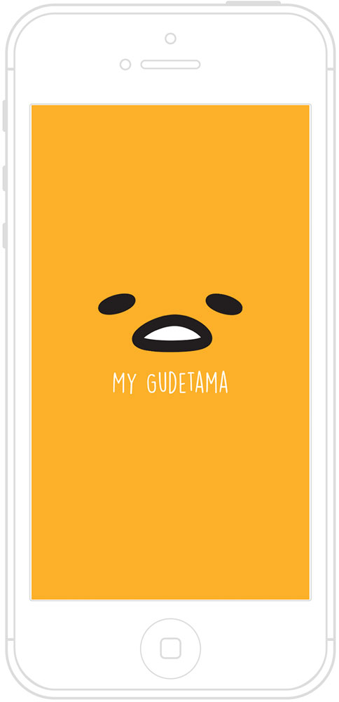

My Gudetama

A mobile app that encourages users to walk for their pet Gudetama
Hackday Project for Cardinal Blue
We wanted to create an app that takes advantage of the popular Sanrio character, Gudetama, but actually make it useful for people. We decided to use the character to motivate people into having a healthier lifestyle.User Interview Key Findings
Users like to keep track of specific activities but generally do not record dietsThe average user (doesn't have special health needs) do not like to input data for activities that don't give them a sense of accomplishment (e.g. eating)
Users prefer apps that can automatically record physical activity without user input, especially typing in information
Girls that like Gudetama like to collect Gudetama themed products
Challenges
One of the hardest challenges was coming up with a system that could easily translate a user's activity into quantifiable rewards. For example, recording meal content would be too difficult to objectively quantify into a reward system and we didn't want to depend on users painstakingly inputing lots of data. A user's actions need to be automatically recorded and turned into rewards with a quantitative scale.How to influence user behavior?
Another challenge was influencing a user's behavior. We thought of translating user activity into food for Gudetama, but this is not enough as there is no novelty factor for the user. There needed to be something always new to get them hooked into using the app again. Being able to see the same Gudetama animations would not be exciting enough; we needed to add something that transformed him so you get something new when you use the app. We looked at apps like Pokemon Go and Taipei Walker, which both motivate users by providing new things to collect.Goals
Track specific user activityTranslate user activity into quantifiable rewards
Influence user's behavior by creating incentives they want to collect
Minimize data input for user
Solution
We decided to narrow it down to one activity: walking. This greatly simplified the reward system we needed to create, allows the user to more easily accomplish the goals in their daily life, and eliminates the need to input data regularly. To solve both the incentive and activity quantification problem, I suggested a coin system that can be used to buy collectible rewards for your pet. A set number of steps will earn you coins, which can be used to buy goodies that Gudetama can interact with. Goodies will range from basic to luxurious, so this should motivate users to keep using the app so they can collect increasingly luxurious goodies to see more funny interactions.User Persona: Emily
"I like cute characters and would enjoy being able to interact with them personally."
Emily opens My Gudetama and is greeted by the lazy egg, who shows her a tutorial.

She walks 10 steps and completes the tutorial.

She begins level 1 and starts walking. Once she has enough coins, she decides to buy a bacon for her Gudetama.
Learnings
This was the most challenging hackday project I designed for, so I learned a lot through those challenges. I gained new understanding of what specific motivations and desires could change behavior. I also learned how to extract information from user interviews and precisely organize that data to create a useful system. Further work on this app would require a better management system for users to own and use these goodies. Of course, this app would need to be further tested among users.Wireframe

Process
interviews, define, ideate, wireframes, visual design
My team pitched, conducted interviews, designed, developed, and presented the app within two days. My team included a developer, two designers, and two product managers. We worked collaboratively to come up with the user requirements and user flow. I came up with the coin and reward purchase idea and was in charge of the wireframe and designing the user interface. I worked closely with a developer to create the visual UI assets. Screens were prototyped using Photoshop and Sketch.
My team pitched, conducted interviews, designed, developed, and presented the app within two days. My team included a developer, two designers, and two product managers. We worked collaboratively to come up with the user requirements and user flow. I came up with the coin and reward purchase idea and was in charge of the wireframe and designing the user interface. I worked closely with a developer to create the visual UI assets. Screens were prototyped using Photoshop and Sketch.